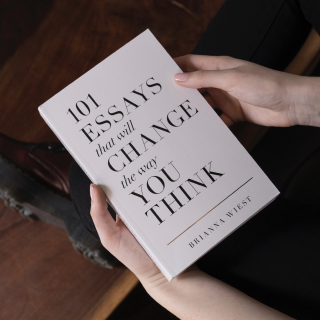

Главные проблемы в обучении
Ни в школе, ни в институте нас не учат тому, как правильно изучать материал. Мы готовимся к экзаменам и учим билеты. Мы тренируемся решать однообразные задачи, чтобы лучше сдать тест, но часто в итоге это не дает нам реального знания. Зубрежка быстро выветривается и не приносит пользы.
Вывод:
учиться тоже нужно уметь, но почему-то этому мало где учат. Что с этим делать?
Конкретные техники и упражнения помогают изменить подход к обучению, сделать его эффективным и захватывающим. Эти же техники применяются на примере обучения в Практикуме.
Техники обучения
Пять практик от Барбары Оакли

Два вида внимания
Глубокие знания возникают, если чередовать сфокусированное и рассеянное мышление.

Recall
Вспоминайте изученное — это позволит соединить разрозненные порции памяти.
Интерливинг
Изучайте несколько навыков одновременно, они обогащают друг друга.

Вопросы
Слушая преподавателя, придумывайте хороший вопрос, который вас действительно волнует.
Иллюзия компетентности
Повторите про себя, запишите, расскажите другу: вам только кажется, что вы владеете новой темой.
Видео нa TED
Для тех, кто любит прокрастинировать
История Барбары Оакли.
С детства Барбаре не давалась математика. Она считала себя законченным гуманитарием, причём далеко не самым умным. В армии она изучала русский язык, чтобы получить надбавку, да так успешно, что её выдвинули в командиры. Но для продвижения по службе нужно было сдавать математику. И тогда Барбара придумала свой подход к точным наукам. Оказалось, если вам что-то «плохо даётся», ваши добытые трудом знания гораздо глубже, чем у тех, кому всё ясно с первого взгляда.
Метод Фейнмана
Выучить и не забыть.
Подробнее →

Цифры и факты
Про учёбу и мозг
86 миллиардов
Число нейронов в мозге человека
2.1 миллиарда
Число нуждающихся в повышении квалификации
Всемирный Банк, 2017
1000 терабайт
Объём памяти человека
500 триллионов
Число ответственных за обучение нервных синапсов у взрослого человека
420 миллионов
Число взрослых людей моложе 25 лет, не имеющих образования для трудоустройства
Всемирный Банк, 2017
17–20 лет
Пик обучаемости
1885 год
Открытие кривой забывания
1889 год
Открытие условного рефлекса
Весь мир — школа
Страсть и новаторство Сала Хана меняют процесс обучения миллионов студентов по всему миру. Книгу «Весь мир — школа» нужно прочитать всем, кто занимается образованием — так учащиеся повсюду смогут получить навыки и знания, которые приносят успех в школе, карьере и жизни.

Принципы обучения
от Джоша Кауфмана
1
Выберите привлекательный проект.
2
Сосредоточьтесь на каком-то одном навыке.
3
Определите целевой уровень мастерства.
4
Разбейте навык на элементы.
5
Приготовьте всё необходимое для занятий.
6
Устраните препятствия для занятий.
7
Выделите специальное время для занятий.
8
Создайте быстрые петли обратной связи.
9
Занимайтесь по расписанию, короткими интенсивными интервалами.
10
Уделяйте внимание количеству и скорости.

Полезные ресурсы
Больше материалов о техниках и лайфхаках обучения